Architecture Overview
Understanding how all the pieces fit together
🏗️ System Architecture
Here's the complete architecture of the observability stack:
Architecture Diagram

Mermaid Code
graph TB
subgraph "User Layer"
U[Browser]
end
subgraph "Application Layer"
N[Nginx<br/>:80]
D[Django<br/>:9000]
DB[PostgreSQL<br/>:5432]
end
subgraph "Metrics Layer"
P[Prometheus<br/>:9090]
NE[Node Exporter<br/>:9100]
end
subgraph "Logging Layer"
PT[Promtail]
L[Loki<br/>:3100]
end
subgraph "Visualization Layer"
G[Grafana<br/>:3000]
end
subgraph "Alerting Layer"
AM[Alertmanager<br/>:9093]
S[Slack]
end
U --> N
N --> D
D --> DB
D -->|/metrics| P
NE -->|/metrics| P
D -->|log files| PT
PT -->|/loki/api/v1/push| L
P -->|query| G
L -->|query| G
P -->|alerts| AM
AM -->|notifications| S
🔄 Data Flow
How Metrics Flow (Pull Model)
The metrics flow is a pull model - Prometheus scrapes data from your application:
┌─────────────────────────────────────────────────────────────────┐
│ METRICS FLOW │
├─────────────────────────────────────────────────────────────────┤
│ │
│ 1. Django exposes /metrics endpoint │
│ (auto-instrumented with django_prometheus) │
│ │
│ 2. Prometheus scrapes every 15 seconds │
│ GET http://obs-django:9000/metrics │
│ │
│ 3. Prometheus stores metrics in TSDB │
│ (Time Series Database) │
│ │
│ 4. Grafana queries Prometheus for visualization │
│ PromQL queries via API │
│ │
│ 5. Alertmanager evaluates rules │
│ Sends alerts to Slack when thresholds are breached │
│ │
└─────────────────────────────────────────────────────────────────┘
How Logs Flow (Push Model)
The logs flow is a push model - Promtail pushes logs to Loki:
┌─────────────────────────────────────────────────────────────────┐
│ LOGS FLOW │
├─────────────────────────────────────────────────────────────────┤
│ │
│ 1. Django writes JSON logs to /app/logs/django.log │
│ (via Python logging module) │
│ │
│ 2. Promtail tails the log file continuously │
│ (like `tail -f`) │
│ │
│ 3. Promtail parses JSON and extracts labels │
│ level, logger, message │
│ │
│ 4. Promtail pushes to Loki │
│ POST http://obs-loki:3100/loki/api/v1/push │
│ │
│ 5. Loki stores logs with indexed labels │
│ (not full-text, label-based) │
│ │
│ 6. Grafana queries Loki for log visualization │
│ LogQL queries │
│ │
└─────────────────────────────────────────────────────────────────┘
🌐 Container Map
| Container | Port | Networks | Purpose | How It Works |
|---|---|---|---|---|
| obs-django | 9000 | app, observability | Your application | Exposes /metrics endpoint |
| obs-postgres | 5439 | app | Database | Stores todo data |
| obs-prometheus | 9090 | observability | Metrics collector | Scrapes targets every 15s |
| obs-grafana | 3000 | observability | Visualization | Queries Prometheus & Loki |
| obs-loki | 3100 | observability | Log storage | Stores indexed logs |
| obs-promtail | - | observability | Log shipper | Tails files, pushes to Loki |
| obs-alertmanager | 9093 | observability | Alert router | Sends to Slack |
| obs-nginx | 80 | app | Reverse proxy | Routes requests to Django |
| obs-node-exporter | 9100 | observability | System metrics | CPU, memory, disk |
| obs-pgadmin | 5050 | app | DB admin | Web UI for PostgreSQL |
🔌 Network Architecture
The containers communicate via two Docker networks:
graph LR
subgraph "app_network"
A[Django]
B[PostgreSQL]
C[Nginx]
D[pgAdmin]
end
subgraph "observability_network"
A
E[Prometheus]
F[Grafana]
G[Loki]
H[Promtail]
I[Alertmanager]
J[Node Exporter]
end
Why two networks?
- app_network: Application containers (Django, PostgreSQL, Nginx)
- observability_network: Monitoring containers + Django (for metrics collection)
Django is on both networks because it needs to:
- Talk to PostgreSQL (app_network)
- Expose metrics to Prometheus (observability_network)
- Write logs that Promtail can read (observability_network)
📊 Key Metrics Explained
HTTP Metrics (from Django)
| Metric | What It Measures |
|---|---|
django_http_requests_total |
Total number of requests |
django_http_requests_latency_seconds |
Request duration histogram |
django_http_responses_total_by_status |
Response count by status code |
Database Metrics (from PostgreSQL)
| Metric | What It Measures |
|---|---|
django_db_query_duration_seconds |
Database query time |
django_db_errors_total |
Database error count |
django_db_execute_total |
Total DB queries |
System Metrics (from Node Exporter)
| Metric | What It Measures |
|---|---|
node_cpu_seconds_total |
CPU usage by mode |
node_memory_MemAvailable_bytes |
Available memory |
node_filesystem_avail_bytes |
Available disk space |
🔔 Alert Flow
┌─────────────────────────────────────────────────────────────────┐
│ ALERT FLOW │
├─────────────────────────────────────────────────────────────────┤
│ │
│ 1. Prometheus evaluates alert rules every 15 seconds │
│ │
│ 2. Alert condition met (e.g., Django is down) │
│ │
│ 3. Prometheus sends alert to Alertmanager │
│ POST http://obs-alertmanager:9093/api/v1/alerts │
│ │
│ 4. Alertmanager groups and routes alerts │
│ - db alerts → #alerts-db │
│ - http alerts → #alerts-http │
│ - latency alerts → #alerts-latency │
│ - infra alerts → #alerts-infra │
│ │
│ 5. Slack receives notification │
│ With formatted message and severity │
│ │
└─────────────────────────────────────────────────────────────────┘
🔧 Configuration Files
| File | Purpose | Key Settings |
|---|---|---|
prometheus/prometheus.yml |
Scrape configuration | Targets, intervals |
prometheus/rules/alerts.yml |
Alert rules | Thresholds, severity |
alertmanager/alertmanager.yml |
Alert routing | Slack channels, grouping |
promtail/promtail-config.yml |
Log collection | Files to tail, labels |
loki/loki-config.yml |
Log storage | Retention, schema |
grafana/provisioning/datasources/datasources.yml |
Datasources | Prometheus & Loki URLs |
nginx/nginx.conf |
Reverse proxy | Upstream, locations |
django_app/config/settings.py |
Django config | Metrics, logging |
🎓 Understanding the Components
What is Prometheus?
Prometheus is a metrics collection system that:
- Pulls metrics from targets (your Django app)
- Stores them in a time-series database
- Evaluates alert rules
- Sends alerts to Alertmanager
What is Loki?
Loki is a log aggregation system that:
- Receives logs via HTTP push
- Indexes only metadata (labels), not full text
- Stores compressed log data
- Provides LogQL query language
What is Promtail?
Promtail is a log shipping agent that:
- Tails log files (reads new lines)
- Parses JSON log format
- Extracts labels
- Pushes to Loki
What is Grafana?
Grafana is a visualization platform that:
- Connects to Prometheus (metrics)
- Connects to Loki (logs)
- Creates dashboards and graphs
- Supports alerting
🔍 How to Inspect
Check Container Health
# View all containers
docker ps
# Check specific container
docker inspect obs-django --format '{{.State.Health.Status}}'
# View container logs
docker logs obs-django --tail 20
Check Network Connectivity
# List networks
docker network ls
# Inspect network
docker network inspect django_app_observability_network
# Test connectivity from container
docker exec obs-django wget -qO- http://obs-prometheus:9090/-/healthy
Check Metrics
# Query Prometheus
curl http://localhost:9090/api/v1/query?query=up
# Check Django metrics
curl http://localhost:9000/metrics | grep django_http
Check Logs
# Query Loki
curl 'http://localhost:3100/loki/api/v1/query?query=%7Bapp%3D%22django%22%7D'
# View log file
docker exec obs-django cat /app/logs/django.log | tail -5
📚 Learn More
Now that you understand the architecture, explore the modules:
Start Here
- Django App - The application being monitored
- Prometheus - Metrics collection
Then Explore
- Grafana - Visualization
- Loki - Log aggregation
- Alertmanager - Alerting
Ready to dive deeper? 👇